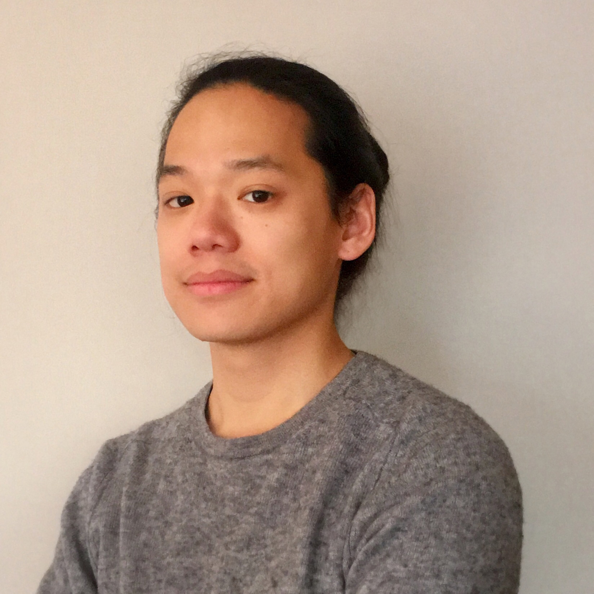
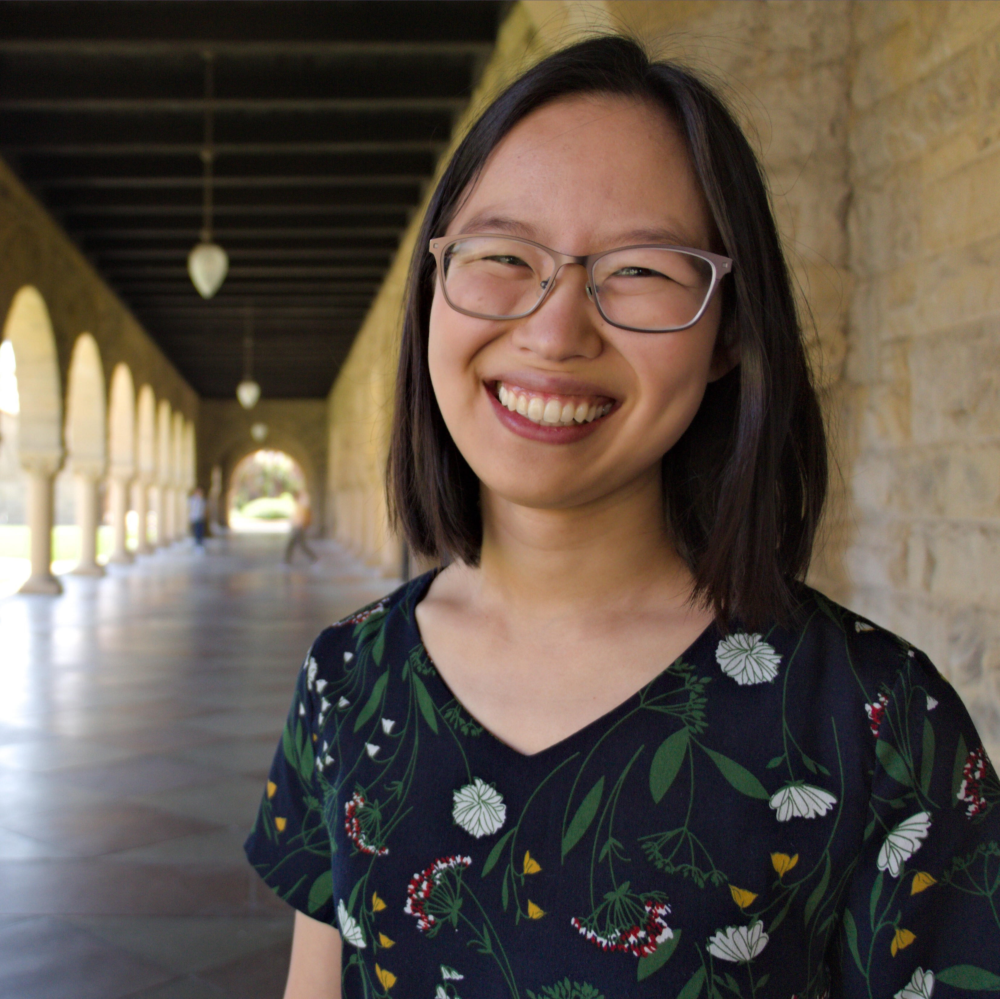
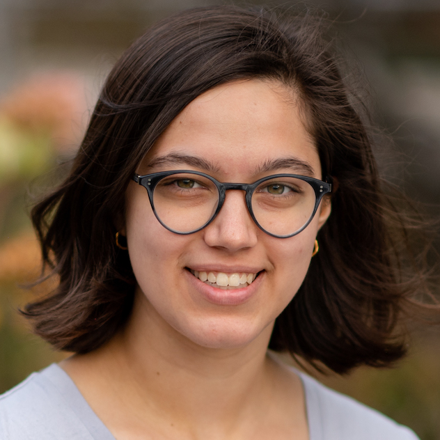
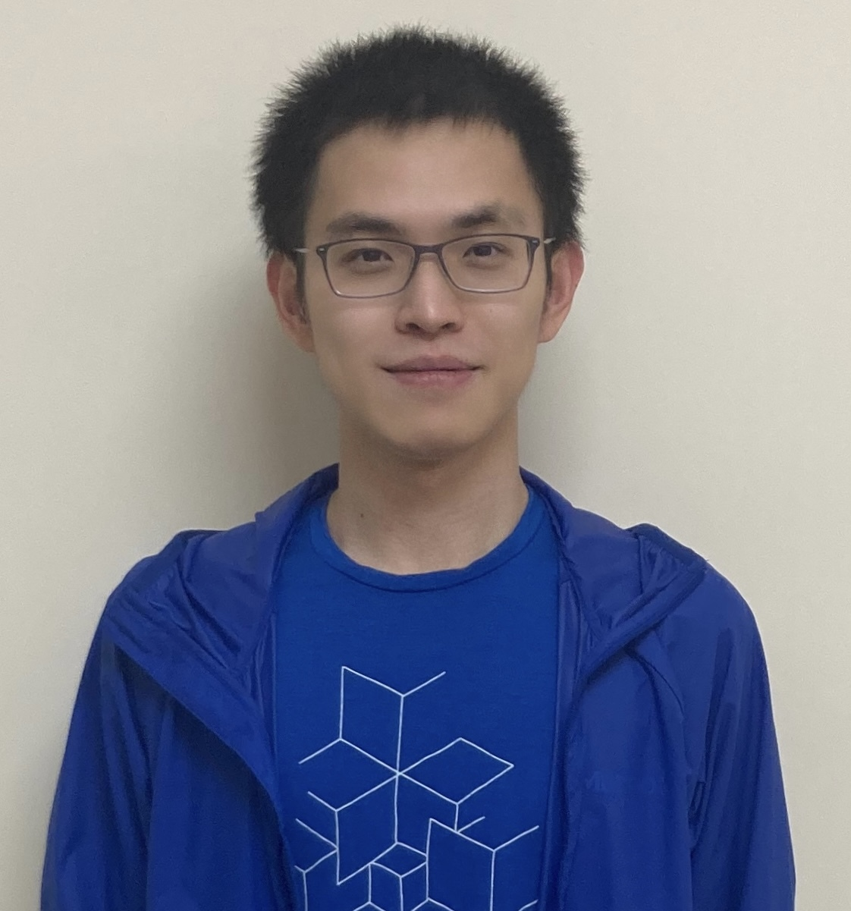
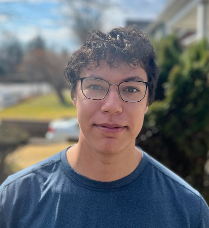
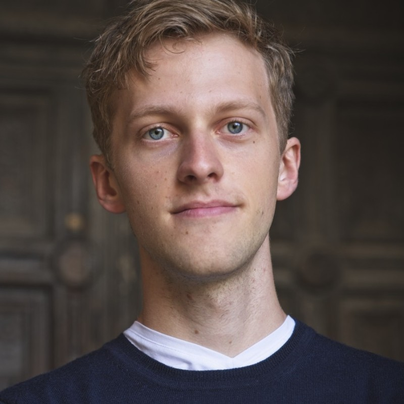
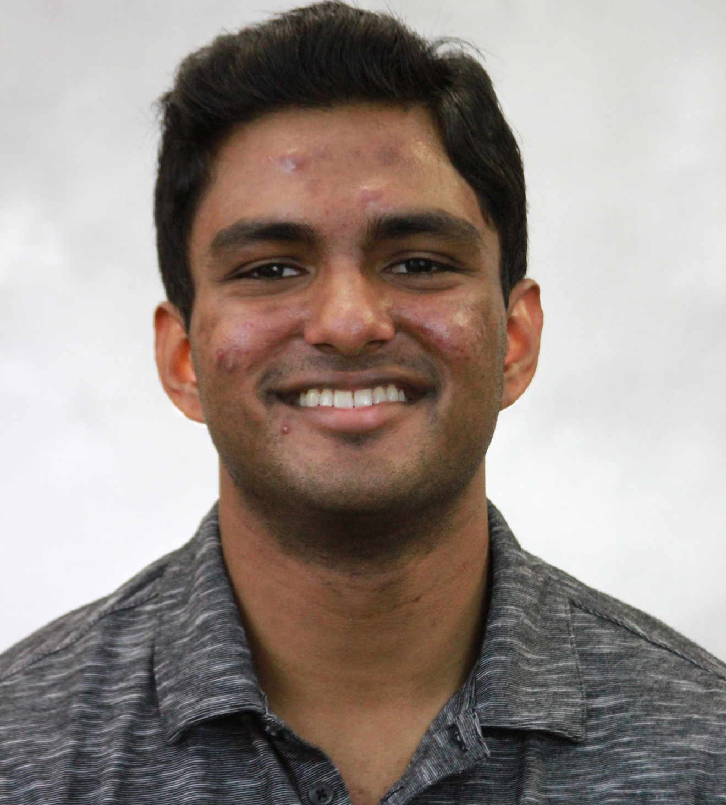
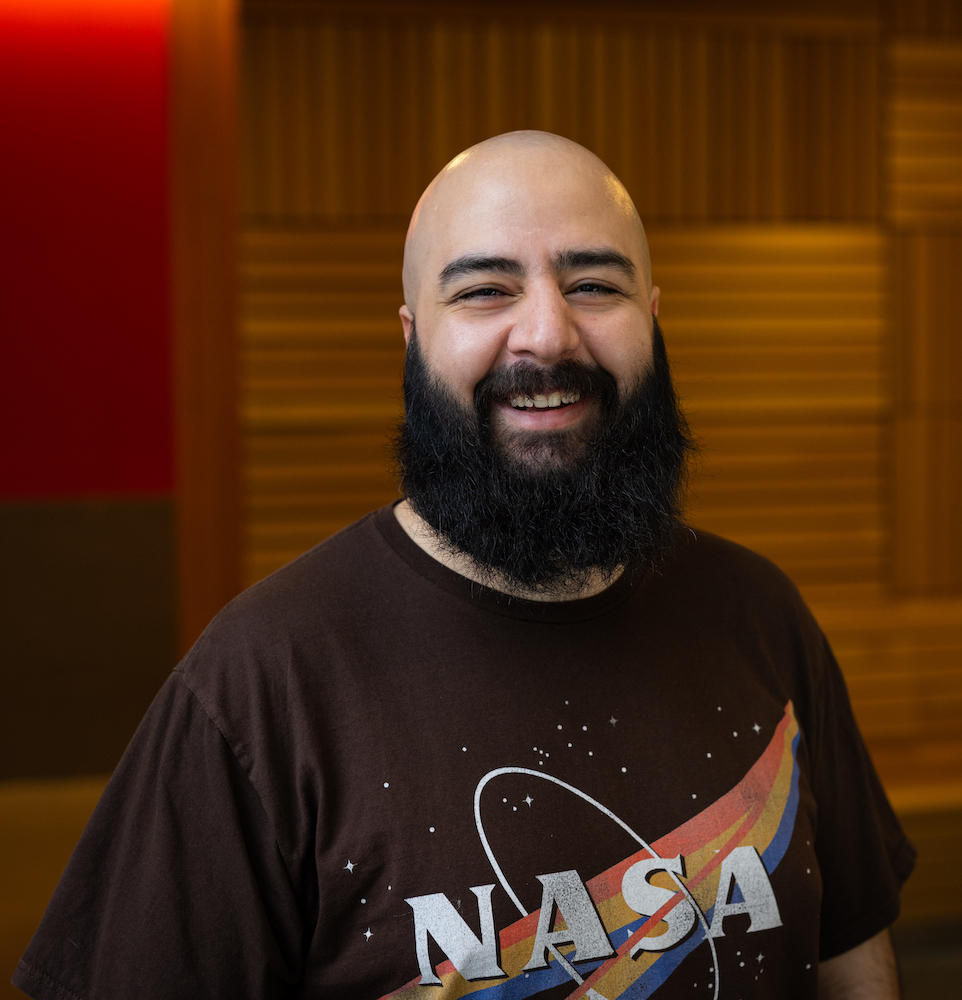
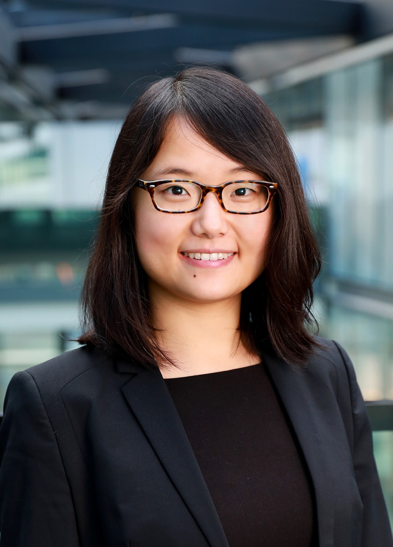

My research examines the cognitive, motivational, and social processes that
underpin human problem solving. I am especially interested in questions surrounding
the structure and interpretation of intentional action, such as:
How do people organize their thoughts and actions when pursuing individual or shared goals?
How do people interpret and influence the intentional behavior of others using theory of mind?
How do complex social phenomena emerge from the interplay of individual intentions?
I am also interested in how approaches from computational cognitive science can
inform the development of intelligent machines that interact with people.
CV -
Personal webpage -
Twitter -
Bluesky -
GitHub

I’m a developmental cognitive scientist studying how children learn about social categories.
How do children form beliefs about social groups, such as gender or racial stereotypes?
How do children think about social structures and patterns of inequality?
I'm currently a postdoctoral fellow in psychology advised by Marjorie Rhodes.
I received my PhD in psychology from Stanford University, advised by Ellen Markman,
and my BA in psychology with a minor in philosophy from the University of Chicago.
Personal webpage

In my PhD, I am excited to explore decision-theoretic and program synthesis models of human cognition and behavior. For instance, how do we represent the tasks we want to accomplish, and when do different representations elicit different attitudes and behaviors? How do we decide what representations to prioritize and communicate? In the past, I have worked as a lab manager in the Computational Cognitive Science & Concepts and Cognition Labs at Princeton, earned my B.A. in Cognitive Science from UC Berkeley, and worked as a computer science educator at the Lawrence Hall of Science.

After receiving a bachelor's in physics, I ventured into computational neuroscience, striving to uncover the neural basis of cognitive processes. Now, I'm making another transition into cognitive science, trying to understand how people can learn better throughout their lifetime in the age of AI. In general, I'm interested in discovering novel solutions to simplify our life. They could arise from studying how we make plans and manage our mental effort. They might also come from endeavors to develop a distributed way of living, now in the form of bikepacking with a Brompton. Website: https://yaopeihu.github.io/

In 2020 I graduated from Rutgers with a double major in Philosophy and Cognitive Science. I then worked as a data scientist in finance for two years before coming to Stevens as a master's student to return to my passion for cognitive science and to further develop my computational skills. My specific interest is in learning about how non-linguistic cognitive abilities affect the semantic content of concepts. I'm currently working with Professor Ho on Inverse Hierarchical Reinforcment Learning, motivated by the goal of learning about how humans create and use concepts.

Jeroen Olieslagers is a PhD candidate in the Center for Neural Science at NYU, advised by Wei Ji Ma. He is broadly interested in how people solve problems. Currently, he is investigating the mechanisms of planning in complex problem solving using the games of Rush Hour and four-in-a-row. Before NYU, Jeroen got his MEng and BA in Computer and Information Engineering from the University of Cambridge.
Andi Peng is a PhD student at MIT working on human-robot interaction and representation alignment. Her work leverages human input to develop more efficient, scalable algorithms for teaching abstract task knowledge to autonomous agents. Prior to MIT, she spent two years as an AI Resident at Microsoft Research and before that, received a B.S. in Cognitive Science and B.A. in Global Affairs from Yale.

Dilip Arumugam is a Ph.D. candidate in the Stanford University Computer Science Department where he is advised by Benjamin Van Roy and affiliated with the Stanford Artificial Intelligence Lab as well as the Stanford Computation & Cognition Lab. Previously, he completed his B.S. and M.S. degrees in the Brown University Computer Science Department where he was advised by Michael Littman. His research currently focuses on how information theory offers principled and practical insights into addressing the challenges of sample-efficient reinforcement learning. For more information, please check out his website.

Hello! I'm Sevan Harootonian, but I go by Sev. I'm interested in studying mentorship and understanding the cognitive mechanisms that contribute to its success. One project I've been working on examines how people infer others' knowledge to determine the best way to teach them. I use Reinforcement Learning and Bayesian models to figure out what mental strategies people apply in teaching situations. Teaching is just one aspect of mentorship, and I'm also interested in other important factors, such as inspiration and motivation.

I am a visiting PhD student from Dr. Falk Lieder's Rationality Enhancement Group at Max-Planck-Institute for Intelligent Systems in Tübingen. My research focuses on understanding human metacognitive learning, that is how do people learn planning strategies. For this, I both design and implement online experiments to collect human behaviour data in order to verify hypotheses about human metacognitive learning as well as apply reinforcement learning models to explain the underlying learning behaviour using the collected data. Currently, I am collaborating with Dr. Mark Ho on understanding how people learn how to choose subgoals. My research interest include computational modelling, multi-agent systems and game theory.